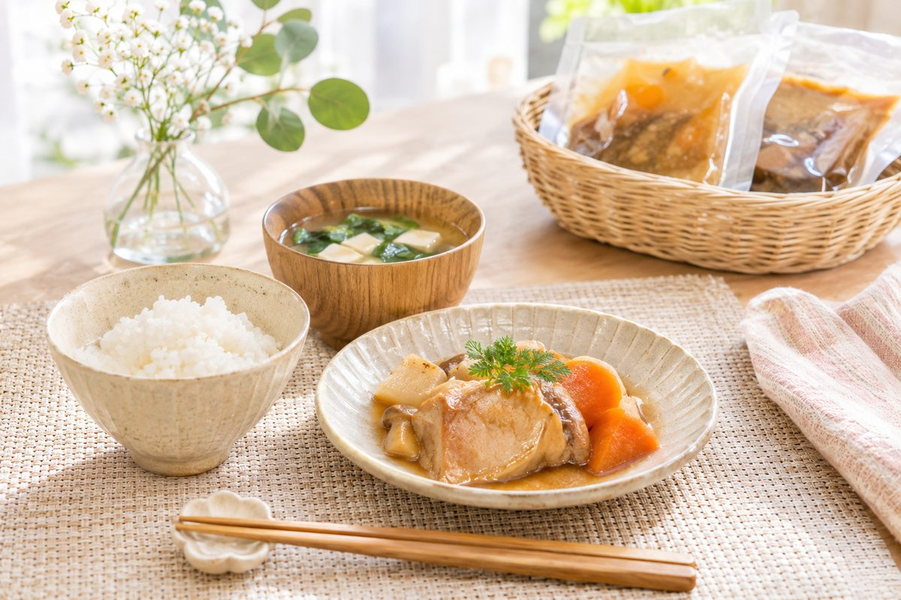
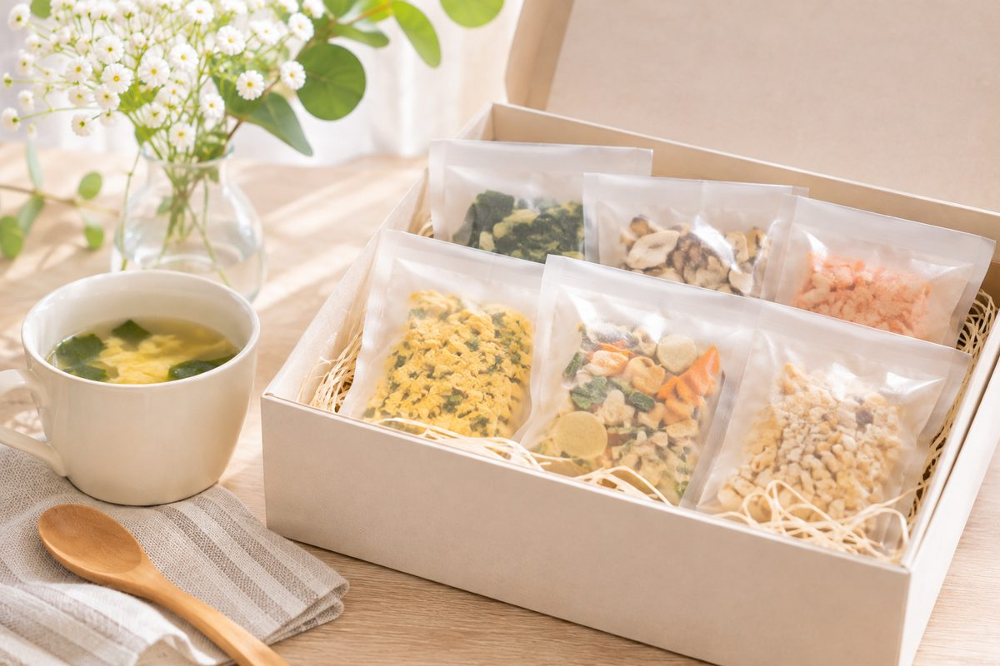

※この記事にはアフィリエイト広告（PR）が含まれます。記事内のリンクからご購入いただくと、当サイトに紹介料が支払われる場合があります。なお、商品の並び順や評価は広告の有無ではなく、下記の調査根拠に基づいて決めています。
なぜ「食事」は二人目で評価されるのか
二人目の出産祝いで贈る側がいちばん困るのは、「もうだいたい揃っている」ことです。ベビー用品は1人目の在庫とお下がりがあり、定番の品ほど被ります。
その点、食事ギフトは構造が違います。在庫にならず、被っても消費され、置き場所も取りません。当サイトが集計したX（旧Twitter）上の受け取り体験の具体投稿では、食事系ギフトは嬉しい9件に対して、困った側の具体投稿が0件でした。子育てメディアの調査（おもちゃいろ・ママ100人）でも、「食事宅配・家事代行券」がもらって嬉しかったものに入っています。
理由は時期にあります。2人目の産後は、赤ちゃんの世話に加えて上の子の食事と生活リズムを回す時期と重なります。本人の食事が後回しになりがちなタイミングで、「温めるだけで食べられるもの」が届くこと自体が支援になる、というのが受け取り側の声の構図でした。
この記事は、出産祝いの総合ランキング記事（「二人目の出産祝いは何が正解？」）で3位に入れた食事系ギフトを、タイプ別に深掘りするものです。

贈る前に決める、3つの分岐
食事ギフトの失敗は、品物選びより「相手の状況とのズレ」で起きます。先に次の3つで分岐してください。
- 保存形態（冷凍か、常温か）：冷凍品は冷凍庫の空きが前提です。空きが読めない相手、里帰り中で受け取り日が読めない相手には、常温保存できるフリーズドライを選ぶと渡し方の自由度が上がります。
- アレルギーと授乳中の食材：外からは分かりません。聞ける間柄なら、出産報告への返信のついでに一言確認するのが確実です。聞けない場合は、原材料が単純で、避けたい食材を選び分けやすい詰め合わせ型が無難です。
- 誰の食事になるか：産後のママ本人の回復食として贈るのか、家族全員の夕食の足しにするのかで、量と内容が変わります。上の子も一緒に食べる前提なら、子どもが食べやすい味付けのものを含むセットが向きます。
 タイプ1：冷凍スープ（Soup Stock Tokyo など）
タイプ1：冷凍スープ（Soup Stock Tokyo など）
今回の集計で、食事系ギフトの中で唯一、ブランド名が繰り返し挙がったカテゴリです。Soup Stock Tokyo の冷凍スープは、複数の受け取り投稿で名指しされ、「困ったらこれを送っておくれ」「送っておけば間違いない」といった、他人へ推薦する文脈で語られていました。贈る側の「手抜きに見えないか」という不安に対して、受け取り側の実例が最もはっきり否定しているのがこのタイプです。
- 例：Soup Stock Tokyo「出産祝いのギフトセット」（スープ・カレー8個入）税込5,830円＋送料（2026年11月14日時点・大丸松坂屋オンラインストア掲載価格）。楽天市場では、セット内容の異なるバラエティ7種詰合せ（税込5,400円・2026年11月16日時点）等もあります。
冷凍品なので、分岐1のとおり冷凍庫の空きが前提です。また、セット内容（カレーの有無など）は販売店ごとに異なるため、リンク先で内容を確認してから選んでください。

タイプ2：フリーズドライ（常温・日持ち）冷凍庫問題を避けたいときの受け皿です。フリーズドライの味噌汁・スープの詰め合わせは常温で保存でき、賞味期限も長いため、里帰り中の家庭や、渡す日程を調整しにくい相手にも向きます。Xの集計ではアマノフーズのフリーズドライも名指しで挙がっていました。
- 例：アマノフーズのフリーズドライ詰め合わせ（味噌汁・雑炊・にゅうめん等22食入）税込5,130円（2026年11月16日時点・楽天市場掲載価格）。Soup Stock Tokyoのフリーズドライセットは3,540円〜（2026年11月14日時点・大丸松坂屋オンラインストア掲載）もあります。
「軽い・小さい」ため、上の子へのプチギフト等と組み合わせて贈る同梱枠としても使いやすいタイプです。湯を注ぐだけで食べられる手軽さが、このタイプの強みです。
タイプ3：冷凍惣菜・ミールキット
夕食そのものを肩代わりするタイプです。「食事宅配」が調査で評価されていることからも需要はありますが、当サイトの集計では、特定ブランドへの名指しの声は冷凍スープほど集まりませんでした。そのため本記事では、ブランドの推奨ではなく選び方の基準だけを示します。
- 上の子が食べる分量が含まれているか（大人2人分だけのセットは、2人目家庭では不足しがちです）
- 解凍・加熱の手間が「湯煎・電子レンジ」で完結するか
- 賞味期限と冷凍庫の占有量が、セットの個数と見合っているか
予算別の目安
食事系ギフトの中心帯は3,000〜5,000円台で、出産祝いの関係性別の相場（友人・知人3,000〜10,000円、同僚3,000〜5,000円）の範囲に収まります。
| 予算 | 型 | 向く相手 |
|---|---|---|
| 3,000円台 | フリーズドライの詰め合わせ | 同僚・連名の按分、遠方で日程が読めない相手 |
| 5,000円前後 | 冷凍スープのギフトセット | 親しい友人、里帰りなし・自宅で育児中の家庭 |
| 予算に余裕がある場合 | 食事ギフト＋上の子プチギフト（1,000〜3,000円）の同梱 | 2人目全般（満足度を上げる組み合わせ） |
金額そのものより、「産後の食事が回らない時期に、すぐ食べられるものが届く」という設計が評価の中心です。高額化するより、上の子への小さな同梱を足すほうが、2人目ギフトとしての完成度は上がります（上の子プチギフトの考え方は、総合ランキング記事の9位の節で詳しく書いています）。
食事ギフトが向かないケース
- 里帰りが長く、自宅で受け取れない：冷凍品は特に避け、常温品にするか、帰宅時期に合わせて配送日を指定してください。
- 食事制限・アレルギーの情報がまったく取れない：食品そのものを避け、ギフトカードや消耗品に切り替えるのが安全です（総合ランキング記事の1位・2位を参照）。
- 相手が料理を楽しみにしているタイプ：ミールキット等は「台所に立つ前提」の贈り物になります。回復を優先したい時期かどうかの見極めが必要です。
 まとめ
まとめ
- 食事系ギフトは、受け取り側の集計で嬉しい9件／困った0件。「揃っている」2人目家庭でも在庫にならない、数少ないカテゴリです。
- 冷凍庫と受け取り時期が読める相手には冷凍スープ、読めない相手には常温のフリーズドライ、という分岐が選び方の軸です。
- 予算は3,000〜5,000円台が中心。余裕があれば、金額を上げるより上の子へのプチギフトの同梱が効きます。
※この記事にはアフィリエイト広告（PR）が含まれます。価格は2026年11月14日時点の確認価格で、最新の価格・在庫・セット内容は各リンク先でご確認ください。調査データの出典：リンベル、おもちゃいろ各調査、およびX上の体験談集計（2026年11月）。受け取り体験は調査結果とSNS上の声をもとに構成しており、特定の個人の体験談として創作したものではありません。